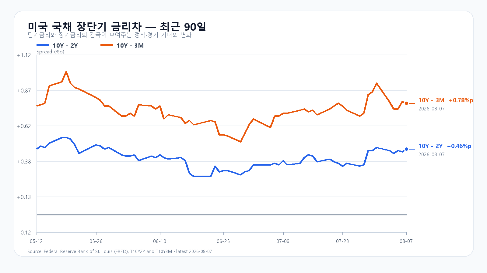
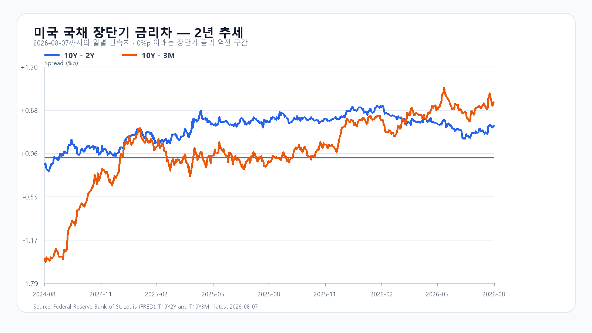

오늘의 한 문장
고용 감소가 미국 금리를 끌어내려 반도체에 숨통을 틔웠습니다. KOSPI가 이 호재를 추세로 바꾸려면 6,400선보다 먼저 외국인 현물과 비차익 프로그램의 개장 30분 매수를 확인해야 합니다.
금요일 수급 역전이 남긴 숙제
8월 7일 KOSPI는 장 초반 6,400선을 넘었지만 6,258.77로 마감했습니다. 오전 9시 11분 외국인 현물은 2,971억원, 프로그램 전체는 2,371억원 순매수였으나 종가에는 각각 8,651억원과 6,513억원 순매도로 돌아섰습니다. 기관은 5,854억원을 순매수했지만 지수를 지키지 못했습니다.
오늘 개장 여건은 금요일보다 낫습니다. 08:50 KST NXT 프리마켓에서 삼성전자는 235,500원으로 1.95%, SK하이닉스는 1,452,000원으로 2.11% 올랐습니다. 원/달러도 1,411.50원으로 1,410원대에 있습니다. 다만 프리마켓 상승은 출발 방향을 보여줄 뿐, 정규장 외국인과 비차익 프로그램의 매수를 대신하지 못합니다.
| 항목 | 확인값 | 오늘 기준 |
|---|---|---|
| KOSPI | 직전 종가 6,258.77 | 6,250 방어 · 6,400 회복 |
| 삼성전자 | NXT 235,500원 · +1.95% | 정규장 231,000원 방어 |
| SK하이닉스 | NXT 1,452,000원 · +2.11% | 정규장 1,422,000원 방어 |
| KODEX 레버리지 | 직전 종가 90,690원 | 92,200원 회복 · 95,830원 돌파 |
| 달러/원 | 1,411.50원 | 1,410원대 유지 |
고용 감소가 만든 금리 하락
미국 7월 비농업 고용은 2만3,000명 감소했습니다. 실업률은 4.1%로 낮아졌지만 5월과 6월 고용도 합계 10만3,000명 하향 조정됐습니다. 채권시장은 경기 둔화보다 당장의 금리 인상 압력 완화에 먼저 반응했습니다. 10년물은 4.64%, 2년물은 4.20%로 내려갔습니다.
S&P500은 0.6%, Nasdaq은 1.3%, Dow는 0.3% 올랐습니다. Nvidia는 2.3%, Broadcom은 1.7% 상승해 한국 반도체의 출발에 힘을 보탰습니다. 다만 고용 감소는 금리 호재와 성장 둔화 신호를 함께 품고 있습니다. 수요일 CPI가 다시 높게 나오면 금리 완화 기대가 빠르게 되돌려질 수 있습니다.
메모리 공급 부족의 실제 온도
TrendForce의 8월 7일 현물가는 DDR5 16Gb가 51.600달러로 0.19%, DDR4 8Gb가 42.450달러로 0.50% 올랐습니다. DDR4 16Gb는 86.268달러로 0.48% 내렸습니다. 공급 부족이라는 큰 흐름은 이어지지만 모든 품목이 같은 속도로 오르는 장은 아닙니다.
삼성전자는 2분기 실적 발표에서 AI 인프라 투자와 에이전트형 AI 확산으로 하반기 서버 DRAM·eSSD·HBM 수요가 더 빨라질 것으로 전망했습니다. 실물 수급은 중기 하단을 받치고 있습니다. 오늘 주가의 높이는 공급 부족 자체보다 금리와 외국인 수급이 결정합니다.
미 국채 장단기 금리차
8월 7일 FRED 확정치에서 10년-2년물 금리차는 +0.46%포인트, 10년-3개월물 금리차는 +0.78%포인트입니다. 금리차는 플러스지만, 반도체에는 경기침체 신호보다 10년물의 절대 수준과 CPI 이후의 방향이 더 직접적입니다.


이번 주는 고용보다 물가가 더 중요하다
| 시각 | 이벤트 | 시장 경로 |
|---|---|---|
| 8월 12일 21:30 | 미국 7월 CPI·실질임금 | 고용 둔화 뒤 금리 방향을 결정 |
| 8월 13일 21:30 | 미국 7월 PPI·신규 실업수당 | 기업 원가와 노동시장 추가 확인 |
| 8월 14일 21:30 | 미국 7월 소매판매 | 고용 감소가 소비 둔화로 번졌는지 확인 |
7월 CPI의 시장 예상은 전년 대비 3.4%로, 6월 3.5%보다 소폭 낮습니다. 물가가 예상대로 둔화하면 금리 하락과 반도체 반등이 이어질 수 있습니다. 반대로 CPI가 다시 높아지면 ‘고용은 약한데 물가는 높은’ 조합이 지수 상단을 막습니다.
오늘의 시나리오와 확인 기준
미국 기술주 반등이 출발을 돕지만 금요일 수급 역전과 CPI 대기가 6,400선 안착을 막습니다.
외국인 현물과 비차익 프로그램이 10시까지 순매수를 유지하고 삼성전자·SK하이닉스가 프리마켓 상승분을 지켜야 합니다.
개장 반등 뒤 외국인과 프로그램이 다시 매도로 돌아서고 6,250선이 무너지면 금요일 저점 구간을 다시 확인합니다.
KODEX 레버리지는 90,690원 방어와 92,200원 회복을 먼저 봅니다. 95,830원은 금요일 장중 고점이자 반등 확산의 다음 기준입니다.
오늘 판단은 공격 35점 · 관망 50점 · 방어 15점입니다.
자료 기준
한국 시세는 Naver Finance, 미국 시장과 고용 발표 뒤 반응은 AP, 고용·CPI·PPI 일정은 미국 노동통계국, 소매판매 일정은 미국 인구조사국, 메모리 현물가는 TrendForce, 금리차는 FRED 자료를 사용했습니다.